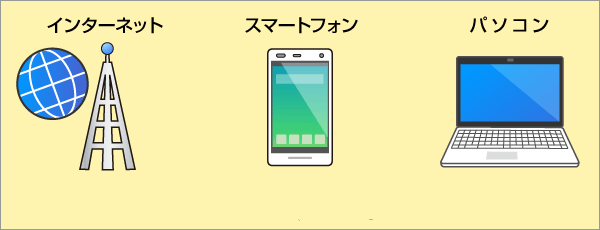
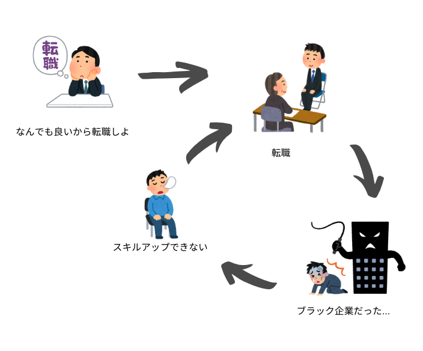

IT系のブラック企業
Japan's "Black" IT Companies
わかりやすく説明してみる。

千松韻
Sherwyn Sen
IT系ってどういうこと?

IT系とは…
Information Technology
日本のIT系とアメリカの「IT」の違い
アメリカ

- パソコンやスマホの整備士
- 企業でコンピューターの管理者
日本

- プログラミングやエンジニアリング(工学)
- ウェブサイトやアプリのデザイナー
アメリカのIT: blue collar (?)
日本のIT: white collar（として思われたらいいのに、、、）
ブラック企業ってどういうこと?

ブラック企業とは…
- 労働基準法に違反する
- 残業が非常に多い
- パワハラ、モラハラなどがよく起こる
- 労働者（とくに若者）を使い捨てにする

日本人はIT系に対してどういう意見がある？

「働いているIT系がブラックすぎる」
「ITはどこの会社もブラックなんだろうか」
「ITの他の職種についても知りたい」
「とにかく日本人は労働者に金払いたくない」
一方こういう意見もあるらしい…

「ITは待遇が良く、ブラック企業は少ないって聞いてたけど…。」
「僕の会社がブラックかどうかに関しては…（残業は）ほとんどないからブラック的な様子ないかなと思っています。」

いったい
どっちが正しいのか？

日本におけるブラック企業
🖙 blackcorpmap.comブラック企業の 割合 は66.8%らしいです。
一般的なIT系の仕事：SES
System Engineering Services

エンジニアはIT会社から客先の会社で働いて...
IT会社は報酬をもらう
ブラックなSES企業の特徴
- プログラミング未経験でもとりあえず客先の会社に送り込む
- 従業員を成長させようとしない
- プログラマーなのにコードは書かせてもらわない
- 給料は非常に低い
無限な下請け…
(ホワイトボードで書く…)
ブラック企業の悪循環 
しょういんの意見

企業: 当社はエンジニアを直接に雇って、SESは遠慮しよう
IT系の方、卒業生: ITの仕事の求職中の方は企業はブラックかどうかちゃんと見極めよう
参考文献
APA
- “｜ブラック企業マップ.” ブラック企業マップ, https://blackcorpmap.com/. Accessed 5 Dec. 2019.
- ゆとり君チャンネル. 6年目ITエンジニアが、IT業界の闇やブラック企業の特徴を暴露します. 8 Dec. 2018, https://www.youtube.com/watch?v=J_A9Lr6KQdI.
- ENGINEER.CLUB編集部. “SESとは？契約形態からグレーといわれる理由まで、業界のリアルを解説.” ENGINEER.CLUB（エンジニアクラブ）, https://engineer-club.jp/ses. Accessed 5 Dec. 2019.
- “IT企業って何をする仕事なの？分かりやすく解説.” IT関係の仕事, https://it-kankei.com/what-to-do/. Accessed 5 Dec. 2019.
- クエストリーガルラボ編集部. “【IT業界】ブラック企業が多い？IT会社での働き方と業界の実態.” クエストリーガルラボ, https://hataraquest.com/it-black-company. Accessed 5 Dec. 2019.
- “ブラック企業とは｜ブラック会社の特徴10個と見抜くポイント｜労働問題弁護士ナビ.” 労働問題弁護士ナビ, https://roudou-pro.com/columns/57/. Accessed 5 Dec. 2019.
- “モラハラとパワハラ、セクハラの違い？職場で起きるモラルハラスメント30選.” 社会人の教科書, https://business-textbooks.com/moral-harassment-workplace/. Accessed 5 Dec. 2019.
- やす. “日本企業の約７割がブラック企業！？【労基法違反の内容と割合】.” ほんゆき「ゆっくり遠まわり」, 13 June 2018, https://honyuki39c.com/black-company/.
- 【人生逆転エンジニア】アップスターツ. エンジニアを目指している方必見！IT業界の歩き方！~ブラック企業の見分け方~. https://www.youtube.com/watch?v=d0EP0YbAywU. Accessed 5 Dec. 2019.
- “外注丸投げが過ぎると何のノウハウも身につかない問題.” 株式会社アクシア, 4 July 2017, https://axia.co.jp/2017-07-04.
- 【決定版】ブラックIT企業を見分ける11のポイントを徹底解説！ブラック企業経験者たちに聞いてわかった、「知らないとヤバイ事実」とは | 東京フリーランス. 2 June 2019, https://tokyofreelance.jp/black-company/.
終わり

質問がある方は
遠慮しないで聞いてください。